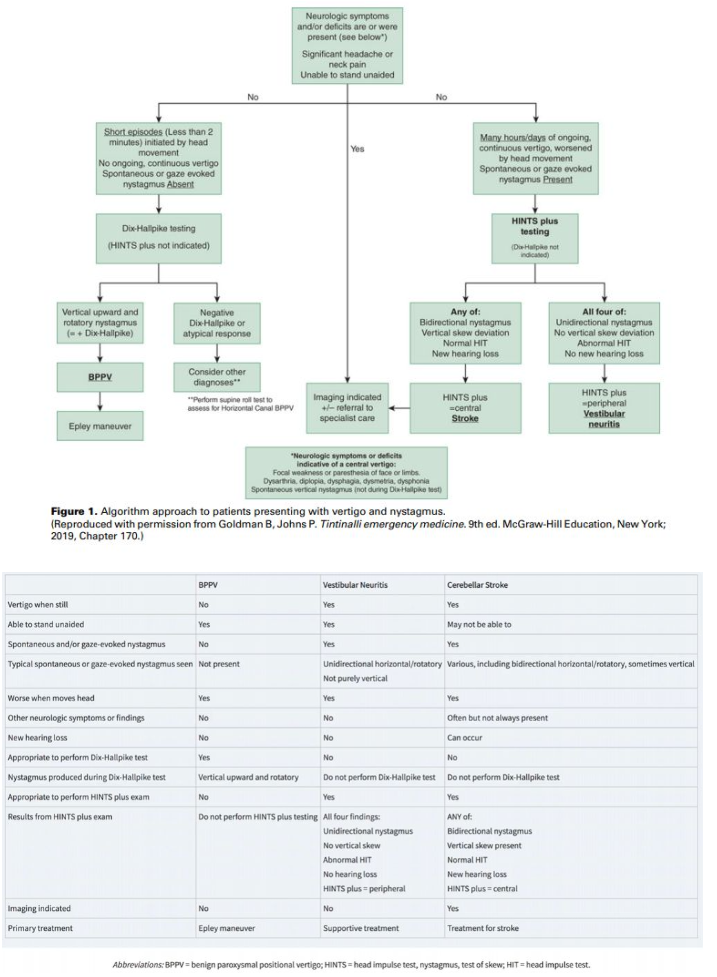
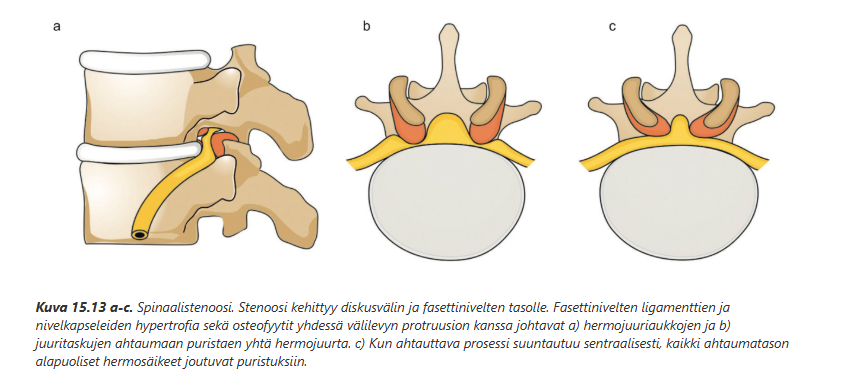
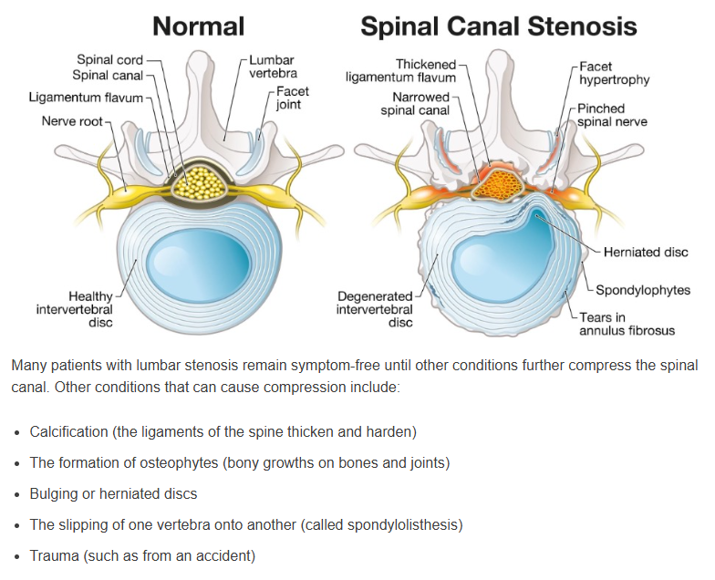

Kappale 9 2019
9.1 Tentti
Vuotta 2020 ei ole wikissä, joten siirrytään vuoden 2019 tenttiin. Potilastapauksista annettu vain otsikot, joten niiden suhteen ei voida muodostaa järkeviä mallivastauksia. Yleisistä esseistä migreenin estohoidon indikaatiot ja lääkevaihtoehdot on jo käyty läpi, joten ei sitä uudestaan. Tässä alla uudet aiheet.
9.1.1 Kallonsisäiset verenvuodot: selitä etiologia, oireet, löydökset ja hoito
Kallonsisäistä verenvuotoa on epäiltävä pään vamman saaneella potilaalla, jolla on vamman jälkeen lisääntyviä oireita (esim. päänsärky, oksentelu, sekavuus, levottomuus), neurologisia puolioireita (lähinnä pareesi), epileptisiä kohtauksia, tajunnantason laskua yms. Kallonsisäiset verenvuodot voidaan jakaa neljään päätyyppiin niiden anatomisen sijainnin mukaan.
Epiduraalivuoto (EDH) = Veri kertyy kovakalvon (dura mater) ja kallon luun väliin
- Keskimmäisen aivokalvovaltimon (a. meningea media) repeämä on kovakalvon ulkopuolisen verenpurkauman eli epiduraalihematooman syynä valtaosalla (85–90 %:lla) tapauksista, ja sijainti on temporoparietaalinen.
Subduraalivuoto (SHD) = Veri kertyy kovakalvon (dura mater) ja lukinkalvon (arachnoidea mater) väliin
Lukinkalvonalainen (subaraknoidaalinen, SAV) vuoto = Verta aivokalvojen väliseen tilaan (lukinkalvon ja pehmeäkalvon väliin), jossa aivo-selkäydinneste kiertää
Intraparenkymaalinen eli intrakerebraalinen vuoto (ICH) = verenvuoto itse aivoparenkyymiin (ns. aivoverenvuoto)
Erot kuvantamisessa näiden kaikkien välillä:

9.1.2 Vertigon eli kiertohuimauksen erotusdiagnostiikka
Kiertohuimauksen (vertigon) erotusdiagnostiikassa on tärkeintä osata napata sentraaliset syyt ja erityisesti niistä aivoverenkiertohäiriöt (AVH), koska ne voivat aiheuttaa huimausta. Kolme yleisintä perifeeristä syytä vertigolle ovat yleisyysjärjestyksessä hyvänlaatuinen asentohuimaus (HAH, BPPV), vestibulaarineuroniitti (eli vestibulaarineuriitti) ja Menieren tauti (harvinainen ja kaksi ensimmäistä ovat tärkeimmät).
Erotusdiagnostiikka alkaa anamneesilla (kesto, muut oireet yms) ja oireen kuvauksella (kaikki eivät tarkoita huimauksella sinänsä kiertohuimausta, vaan voi olla paljon epämääräisempi). On heti tärkeää poissulkea selvimmät aivoverenkiertohäiriöön viittaavat oireet. Sentraalista vertigoa ja varsinkin aivorunko-/pikkuaivoinfarktia tulee epäillä, jos potilaalla on seuraavia liitännäisoireita:
Seuraavaksi jos näitä ei ole todettavissa, niin ei tarvitse välittömästi kuvantaa potilasta, vaan voidaan tutkia statusta tarkemmin. Yksi isoimmista erottelevista löydöksistä on nystagmus, joka voi olla joko jatkuvaa tai jaksoittaista. Nystagmuksesta huomioidaan myös sen suunta, joka määritetään silmävärveen nopeamman komponentin suuntana. Huomioidaan myös mahdollinen rotatorinen osuus. Jos nystagmus on vertikaalista, se viittaa sentraaliseen syyhyn (kts. yllä).
Jos nystagmus ja vertigo on jatkuvaa, niin tulee ensisijaisesti erottaa toisistaan sentraalinen syy ja vestibulaarineuriitti. Jos nystagmus tapahtuu vain jaksoittaisten ja lyhytkestoisten vertigokohtausten yhteydessä, on kyseessä todennäköisesti BPPV.
Vestibulaarineuriitti ja takaverenkierron häiriö usein ilmenevät samankaltaisesti, jonka takia tilaa voi usein kutsua yhteisnimellä akuutti vestibulaarioireyhtymä (AVS), jos todetaan pitkittynyttä jatkuvaa vertigoa ja spontaanista/katseen siirtämisen indusoimaa nystagmusta (pikkuaivoinfarktissa ei siis aina ole neurologisia puutosoireita, joiden perusteella siirryttäisiin suoraan kuvantamistutkimuksiin). Sentraalisen syyn ja vestibulaarineuriitin erotusdiagnostiikassa ensisijainen tutkimusprotokolla on HINTS plus-tutkimus.
Suurimmalla osalla AVS-potilaista on vestibulaarineuriitti. Pienemmällä osalla on selvä stroke, jota voi epäillä liitännäisoireiden perusteella (esim. diplopia, dysartria yms.). Vielä pienemmällä osalla on stroke, joka ei ilmene suoraan liitännäisoireista ja tällöin tarvitaan HINTS plus-tutkimusta erottamaan vestibulaarineuriitti ja stroke toisistaan. HINTS plus koostuu neljästä eri komponentista, joiden perusteella tutkimus on nimettykin: Head Impulse test (HIT, päännykäisytesti, impulssitesti), Nystagmus, Test of (vertical) Skew ja plus (kuulon arviointi bedside). HINTS plus tulisi tehdä vain, jos potilaalla on spontaani nystagmus ja jatkuva huimaus. Sitä EI tule tehdä kohtauksittaisesta huimauksesta kärsivälle, jolla ei ole spontaania nystagmusta (ei nystagmusta -> ei HINTSiä). Jos potilaalla on jaksoittaista lyhytkestoista huimausta ja vain niiden yhteydessä nystagmusta, diagnosoidaan tilanne ensisijaisesti Dix-Hallpiken testillä.
HIT:ssä potilaan katse kohdistetaan suoraan eteen tutkijan nenään ja pää nykäistään nopeasti sivulle (molempia puolia testataan epäsäännöllisessä rytmissä). Samalla arvioidaan tapahtuuko korjausliikettä (epänormaali) vai säilyykö katse fiksoituna. Arvioidaan siis, että toimiiko okulovestibulaarinen refleksi, joka mahdollistaa katseen pitämisen kohteessa, vaikka päätä käännetään siitä pois. HUOM! normaali HIT on huolestuttava löydös ja viittaa sentraaliseen syyhyn. Jos taas löydös on epänormaali, niin se viittaa taas enemmän vestibulaarineuriittiin, joka häiritsee okulovestibulaarista refleksiä (löydös on epänormaali affisioidulle puolelle käännettäessä).
Nystagmuksen arvioimisessa arvioidaan tietysti jo aikaisemmin tarkasteltua, eli onko kyseessä jatkuva tai jopa vertikaalinen nystagmus. Erityisesti nyt kuitenkin arvioidaan, että onko nystagmus bidirektionaalinen eli suuntaa vaihtava. Sentraalisessa syyssä nystagmus vaihtaa suntaa katsetta kohdistettaessa ensin toiselle sivulle ja sitten toiselle, kun taas vestibulaarineuriitissa on unilateraalinen nystagmus (nopea komponentti aina samaan suuntaan).
Skew:n testauksessa potilas kohdistaa katseen tutkijan nenään ja peitetään toinen potilaan silmistä, jota seuraten parin sekunnin välein vaihdetaan peitettävää silmää. Vaihtojen aikana arvioidaan juuri paljastettua silmää. Sentraaliseen vertigon syyhyn viittaa dyskonjugaatio eli voidaan havaita paljastetun silmän vertikaalista korjausliikettä (Kun silmä on peitettynä, se hakeutuu vertikaaliseen virheasentoon (usein alaspäin osoittavaan asentoon). Kun peitto poistetaan ja siirretään käsi toisen silmän päälle, niin paljastettu silmä lähtee korjaamaan virheasentoaan -> vertical skew. Pelkästään horisontaaliset korjaukset ovat benignejä).
“Plus”-osa HINTS plus -tutkimusta tarkoittaa kuulon tutkimista bedside (esim. kuuleeko potilas sormien hieromisen korvien lähellä symmetrisesti ja normaalisti). Jos potilaalla on uusi kuulovika vertigon yhteydessä, niin se herättää epäilyn sentraalisesta syystä. Kuulon tutkiminen on lisätty perinteiseen HINTS-tutkimukseen sen takia, että voitaisiin napata herkemmin kiinni AICA (Anterior Inferior Cerebellar Artery) stroket, sillä ne voivat aiheuttaa unilateraalista kuulonalenemaa. Myös perifeerinen syy, erityisesti labyrintiitti, voi aiheuttaa samanlaisen ilmenemisen, mutta se on hyvin harvinainen -> uusi kuulonalenema äkillisen jatkuvan vertigon yhteydessä tulisi primäärisesti herättää epäily AVH:sta.

9.1.3 Spinaalistenoosin syyt ja oireet (ja ekstrana anamneesi/status, diagnostiikka ja hoito)
Spinaalistenoosi tarkoittaa selkäydinkanavan ahtaumaa. Ahtauma voi olla sentraalista tai lateraalista. Sentraalinen stenoosi tarkoittaa koko ydinkanavan ahtautumista, kun taas lateraalinen stenoosi tarkoittaa juuritaskun (rekessin) ahtautumista. Lateraalinen stenoosi voi jatkua hermojuuriaukkoon (forameniin), joka voi myös yksinään olla ahtautunut. Jako sentraaliseen ja lateraaliseen stenoosiin on radiologinen; sekamuotoinen stenoosi on tavallisin.
Spinaalistenoosi voi tapahtua millä tahansa selkärangan tasolla, mutta yleisintä se on lannerangan alueella ja sen jälkeen kaularangan alueella. Rintarangan alue on stabiili kylkiluiden takia, jonka takia sen stenoosi on harvinaisempaa. Yleisimmät tasot ovat L4-L5 (yleisin), L5-S1 ja L3-L4. Kaularangansta yleisimmin C6-C7 (yleisin) tai C6-C6. Rintarangassa yleisimmät lokaatiot ovat Th11-Th12 ja Th12-L1 (transitio lannerankaan).
Degeneraatiomuutokset ovat yleisin ahtauman syy (osteofyytit, ligamenttien paksuuntuminen; myös välilevyprotruusio tai prolapsi voi olla mukana).
Lannerangan sentraaliselle spinaalistenoosille tyypillinen oire on spinaalinen katkokävely: kävellessä potilaan alaraajat kipeytyvät pakaroista alkaen, puutuvat ja saattavat tulla voimattomiksi. Nämä oireet tulevat usein myös pitkään seistessä. Alamäkeen kulkeminen saattaa olla erityisen hankalaa, koska tällöin selkää on yleensä pidettävä ekstensiossa. Oire provosoituu selän ojennuksen aiheuttamasta muutoksesta selkäydinkanavan läpimitassa.
Lannerangan spinaalistenoosipotilaan (LSS) statuksessa yleisiä löydöksiä ovat:
- Palpoidaan alaraajapulssit (ATP ja ADP); normaali palpaatiolöydös poissulkee merkittävän verisuoniahtauman. Valtimoperäisessä katkokävelyssä oireet eivät yleensä lievity eteen kumartuessa. Ei myöskään yleensä pahene seisomisesta. Pyöräily pahentaa, toisin kuin spinaalistenoosissa. Kipu yleensä alkaa distaalisesti ja etenee proksimaalisesti (neurogeenisessä taas alkaa proksimaalisesti ja etenee distaalisesti). Vaskulaarisessa klaudikaatiossa myös usein iholöydöksiä iskemiasta johtuen.
Selkärangan natiiviröntgentutkimus ei ole välttämätön ennen magneettikuvausta, eikä se anna riittävää informaatiota LSS:n diagnostiikkaa varten. Lähtökohtaisesti erikoislääkäri tekee MK-kuvantamispäätöksen (kuvauksen oikean kohdentamisen, lausunnon tulkinnan ja jatkohoidon optimoimiseksi), joten spinaalistenoositapauksessa konsultointi tärkeää. Usein myös TT tarkastelemaan luurakenteita paremmin. Voidaan myös ottaa natiivitaivutuskuvia ja seisontakuvia. MK-lähetteeseen kirjataan oireiden puolisuus sekä oletettu pinteen taso/tasot lannerangassa.
Hoito voi tilanteesta riippuen olla konservatiivinen tai operatiivinen. Konservatiivisen hoidon aiheet: Potilas sietää oireet riittävän hyvin, ja päivittäinen toimintakyky on riittävä / Potilas ei halua leikkausta; leikkausriskien arviointi tapahtuu yleensä erikoissairaanhoidossa. Hoitona konservatiivisesti fysioterapia, lanneselän tukiliiki, kipulääkitys, ylipainon pudottaminen yms.
Kirurginen hoito on aiheellista, jos on selvästi haittaava tai sietämätön kipu tai merkittävä toimintakyvyn haitta, jotka eivät helpotu konservatiivisella hoidolla. Lisääntyvät kävelyvaikeudet ovat tärkeä leikkausaihe (yleensä <200-300 metriä aihe; tosin kävelymatka on kuitenkin suhteutettava muihin oireisiin, sairauksiin ja potilaan ikään -> nuorilla lievempikin oire voi haitata paljon ja leikkaus voi olla aiheellinen, vaikka kävelymatka olisi yli kilometrinkin).
Huom! Kaularangan alueella stenoosi voi aiheuttaa sekä hermojuuren pinteen (radikulopatia) että selkäytimen pinteen (myelopatia); lannerangan alueella ei ole selkäydintä (päättyy L1/L2), joten ei ole myelopatiakaan siellä.
Tästä johtuen kaularangan ongelmat voivat aiheuttaa mm. radikulopatian kautta säteilykipua ja alamotoneuronioireita yläraajoihin ja myelopatian kautta ylämotoneuronioireita alaraajoihin -> kävelyvaikeudet, spastinen pareesi.
Ehdottomia leikkausaiheita ovat akuutti halvaus ja sietämätön kipu; suhteellisia ovat lievempi kipu, joka ei hellitä kons. hoidolla, lihasheikkoudet ja kookkaat prolapsit. Myelopatia yleensä vaatii leikkausta.


9.1.4 Dementian syyt ja erotusdiagnostiset tutkimukset
Dementia tarkoittaa oireyhtymää, jossa muistin heikkeneminen ja muiden kognitiivisten kykyjen lasku alentavat potilaan kykyä selviytyä itsenäisesti normaaleista arjen toiminnoista. Dementia on oiretermi, ei erillinen sairaus.
Dementian syy voi olla etenevä muistisairaus (esim. Alzheimerin tauti), pysyvä jälkitila (esim. aivovamma) tai hoidolla parannettava sairaus (esim. kilpirauhasen vajaatoiminta). Dementiaan johtavia muistisairauksia (esim. AT) kutsutaan nykyään eteneviksi muistisairauksiksi. Yleisesti koska eri muistisairaudet voidaan tunnistaa ja diagnosoida jo ennen kuin henkilöllä on dementian tasoista heikentymistä, on alettu puhua muistisairauksista ja dementia-termin käyttö on vähentynyt.
Yleisimmät etenevät muistisairaudet ovat:
Etenevien muistisairauksien ulkopuolella yleisimpiä muistivaikeuksien syitä ovat mm.
- aivovamma (usein ohimeneväkin, jos lievä vamma)
- aivoinfarkti
- enkefaliitti (mahdollisesti voi parantua kokonaan, mutta välillä pysyvä vaurio)
- alkoholidementia tai Wernicke-Korsakoff
- sädehoito
- Psyykkiset syyt (esim. masennus, uupumus, PTSD); masennus on tärkeää tunnistaa ja se on yleisin muistihäiriöitä aiheuttava psykiatrinen sairaus
- Aineenvaihduntahäiriöt (mm. hypotyreoosi, hyper- ja hypokalsemia)
- Puutostilat (esim. B12, B9)
- Normaalipaineinen hydrokefalia (NPH)
- Univaje
- Keskushermostoinfektiot
- Aivojen hypoksia (uniapnea, keuhkosairaus)
- Lääkkeet ja päihteet (esim. bentsodiatsepiinit, unilääkkeet, antikolinergit, opioidit, päihteistä esim. alkoholi)
- Epileptiset kohtaukset ja niiden jälkitilat
Perusterveydenhuollon lääkärin tärkein tehtävä muistihäiriöiden selvittelyssä on poikkeavan oireen tunnistaminen ja perusselvitys, johon kuuluu:
Jatkotutkimukset tilanteissa, joissa ei löydy selkeää hoidettavaa syytä, ovat yleensä ensisijaisesti pään MRI ja tilanteen mukaan jotain muitakin, kuten likvor (esim. Alzheimerissa voidaan löytää diagnostisia löydöksiä, kuten beeta-amyloidipeptidi 42:n pitoisuuden pieneneminen ja fosforyloituneen tau-proteiinin pitoisuuden suureneminen). Paikallisen saatavuuden ja ohjeistusten mukaan joskus tk:ssa pään MRI tai iäkkäillä esim. vuodon poissulkuun pään TT. Nykyisen työnjaon mukaan erikoislääkäri (neurologi, geriatri tai psykogeriatri) varmistaa diagnoosin ja laati ensivaiheen hoito-ohjeet ja mm. yhteenvedon tutkimuksista.